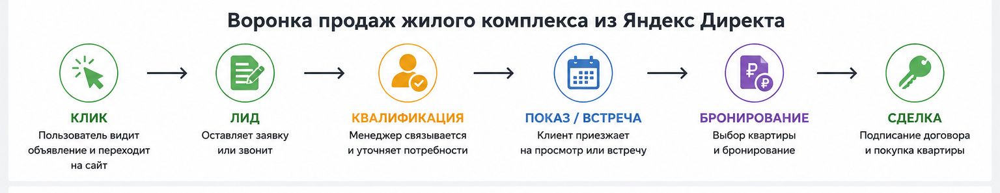

Блог о платном трафике
Реклама ЖК в Яндекс Директ: как продвигать жилой комплекс и получать заявки
Реклама ЖК в Яндекс Директ должна строиться вокруг конкретного объекта, его аудитории и причин, по которым человек выбирает квартиру. Для одного покупателя решающей будет цена, для другого - район, планировка, срок сдачи, отделка, ипотека или возможность обменять старую квартиру на новую.
Поэтому при продвижении жилого комплекса я разделяю спрос по разным сценариям, отдельно работаю с поиском и РСЯ, отслеживаю звонки и заявки и смотрю на качество обращений. Оценивать рекламу только по кликам или общей цене лида в недвижимости недостаточно.
Чем реклама ЖК отличается от обычной рекламы недвижимости
У жилого комплекса есть собственный бренд, конкретная локация и ограниченный набор квартир. При этом пользователь может прийти к этому объекту совершенно разными путями.
Кто-то уже знает название ЖК и вводит его в поиск. Другой ищет двухкомнатную квартиру в определенном районе. Третий сравнивает несколько новостроек возле метро. Четвертый рассматривает покупку только при наличии подходящей ипотеки или trade-in.
Из-за этого одна рекламная кампания с общими объявлениями редко позволяет нормально управлять спросом.
Я обычно разделяю его минимум на несколько направлений:
| Сегмент | Что может искать пользователь | На что вести |
|---|---|---|
| Бренд ЖК | название комплекса, название + квартиры | страница конкретного ЖК |
| География | новостройки в районе, квартиры возле метро | подборка подходящих квартир |
| Тип квартиры | студия, 1-комнатная, семейная квартира | нужные планировки |
| Условия покупки | ипотека, рассрочка, trade-in | страница конкретного предложения |
| Общий спрос | купить квартиру в новостройке | сильная посадочная с выбором квартир |
Чем точнее совпадают запрос, объявление и страница после клика, тем проще получить осмысленное обращение.
Как я строю рекламу жилого комплекса в Яндекс Директ
В актуальном Яндекс Директе основным инструментом для performance-продвижения является Единая перфоманс-кампания. В ней можно управлять показами на поиске и в Рекламной сети Яндекса, географией, аудиторными условиями и стратегиями.
Но сама по себе кампания ничего не решает. Основная работа начинается со структуры.
1. Разделяю ЖК и рекламные направления
Если застройщик или агентство продает квартиры сразу в нескольких жилых комплексах, я стараюсь не смешивать их без необходимости.
У каждого объекта отличаются:
- цена;
- расположение;
- класс жилья;
- сроки сдачи;
- планировки;
- инфраструктура;
- акции;
- спрос;
- конверсия сайта.
Это хорошо видно на моем кейсе по продаже студий сразу в нескольких ЖК Москвы.
Средняя стоимость заявки через форму там составила 528 ₽, но в зависимости от объекта CPL находился в диапазоне от 300 до 5000 ₽. Звонок в среднем стоил 2771 ₽. Один из ЖК конвертировал значительно хуже остальных из-за более слабого предложения.
Если смотреть только среднее значение по аккаунту, эту проблему легко пропустить. Поэтому эффективность нужно оценивать отдельно по каждому объекту.
2. Собираю горячий поисковый спрос
Поиск нужен прежде всего там, где человек уже сформулировал намерение купить квартиру.
В семантику могут входить запросы:
- по названию жилого комплекса;
- по району;
- по станции метро;
- по типу квартиры;
- по количеству комнат;
- по новостройкам в нужной локации;
- по конкретным условиям покупки;
- по цене или классу жилья.
Я не стараюсь собрать максимальное количество ключевых фраз. Для недвижимости гораздо полезнее понимать намерение за каждым запросом.
Запрос «купить квартиру» слишком широкий. Запрос с районом, типом квартиры и другими характеристиками уже лучше показывает, что требуется человеку.
Отдельно контролирую автотаргетинг. В ЕПК на поиске необходимо использовать хотя бы одну категорию автотаргетинга, поэтому категории запросов, отчеты по фактическим поисковым фразам и минус-фразы требуют регулярной проверки.
Брендовые запросы по названию ЖК
Брендовый спрос лучше выделять отдельно.
Человек, который вводит название жилого комплекса, уже находится гораздо ближе к объекту, чем пользователь с общим запросом о недвижимости. Он может искать официальный сайт, цены, планировки, отзывы, ход строительства или условия покупки.
Для такого трафика не требуется заново объяснять человеку весь рынок новостроек. В объявлении лучше сразу показывать то, что помогает сделать следующий шаг:
- доступные квартиры;
- актуальные цены;
- планировки;
- срок сдачи;
- условия покупки;
- запись на просмотр;
- контакты отдела продаж.
Брендовый трафик также удобнее анализировать отдельно от общего спроса. Иначе дешевые брендовые обращения могут улучшить средний CPL аккаунта и скрыть дорогую рекламу по холодным запросам.
Реклама ЖК в РСЯ
Поиск ограничен количеством уже существующего спроса. Поэтому для масштабирования обычно приходится работать и с Рекламной сетью Яндекса.
В РСЯ можно обращаться к аудитории раньше, чем человек сформулировал конкретный запрос. Здесь особенно большую роль играет сам объект и визуальная подача.
Креатив должен быстро показать одну сильную причину обратить внимание на ЖК:
- цена от определенной суммы;
- конкретная локация;
- готовая отделка;
- семейные планировки;
- закрытая территория;
- срок сдачи;
- специальное условие покупки.
Пытаться поместить в один баннер все преимущества комплекса обычно бессмысленно. Для разных аргументов лучше создавать отдельные рекламные связки и смотреть, какой посыл приводит более качественную аудиторию.
В недвижимости РСЯ может быть особенно полезна при ограниченном объеме прямого поиска. В моем кейсе с trade-in недвижимости основной поток удалось получать именно через РСЯ и отдельную посадочную страницу с квизом. При рекламном бюджете около 38 000 ₽ в месяц заявки находились в диапазоне 1500-2007 ₽, квалифицированные обращения - 1915-3010 ₽.
Это не ориентир стоимости рекламы для любого ЖК. Кейс показывает другое: иногда связка оффера, посадочной и РСЯ дает результат там, где дорогой поисковый трафик сложно масштабировать.
Посадочная страница для рекламы ЖК
Настройками Директа невозможно компенсировать слабую страницу объекта.
Человек после объявления должен сразу увидеть продолжение того предложения, по которому он кликнул.
Если реклама обещает семейные квартиры, пользователь не должен самостоятельно искать их среди десятков планировок. Если объявление посвящено trade-in, на странице нужно сразу объяснить механизм обмена. Если рекламируется конкретный корпус, переход на общую главную страницу застройщика создает лишний шаг.
На посадочной странице ЖК обычно нужны:
- понятное позиционирование объекта;
- расположение;
- цены или понятный способ их получить;
- доступные планировки;
- фотографии и визуализации;
- преимущества территории и инфраструктуры;
- сроки сдачи;
- условия покупки;
- форма заявки;
- телефон;
- запись на просмотр или консультацию.
Форма тоже влияет на экономику рекламы. Иногда короткая заявка работает лучше, иногда полезен небольшой квиз, который помогает человеку выбрать подходящий вариант.
В кейсе коммерческой недвижимости в ЖК «Ватутинки Парк» работа с квизом, его текстами и рекламными связками помогла снизить стоимость обращения примерно с 6000 до 1700 ₽. В одном из периодов 10 из 12 полученных лидов были квалифицированными.
Этот проект относится к коммерческим помещениям внутри ЖК, но хорошо показывает влияние связки «оффер - рекламное объявление - посадочная страница - квалификация заявки».
Ретаргетинг для жилого комплекса
Квартиру редко выбирают после первого посещения сайта. Пользователь может несколько раз возвращаться к планировкам, сравнивать соседние ЖК, обсуждать покупку с семьей и считать финансовые условия.
Поэтому аудиторию посетителей сайта имеет смысл разделять по поведению.
Например:
- смотрел определенную планировку;
- открывал страницу ипотеки;
- посещал страницу цен;
- начал заполнять форму, но не отправил ее;
- провел много времени на сайте;
- уже отправлял заявку.
Для каждой группы можно подготовить отдельную коммуникацию вместо повторения того же объявления, которое человек уже видел.
Яндекс Директ позволяет использовать цели и сегменты Метрики для работы с аудиторией, ранее взаимодействовавшей с сайтом.

География рекламы ЖК
В недвижимости геотаргетинг нельзя настраивать механически только по адресу объекта.
Покупатели могут находиться значительно дальше самого жилого комплекса. Особенно это касается Москвы, Санкт-Петербурга, крупных агломераций и объектов, рассчитанных на переезд из других регионов.
В Яндекс Директе география задается на уровне групп, а расширенный географический таргетинг может учитывать интерес пользователя к выбранному региону даже при его физическом нахождении в другом месте.
Поэтому я отдельно проверяю:
- где находится объект;
- откуда фактически приезжают покупатели;
- какие районы являются конкурентными;
- ищут ли квартиры жители других городов;
- есть ли смысл расширять географию.
Слишком узкое гео может отрезать часть спроса. Слишком широкое - привести пользователей, для которых предложение фактически нерелевантно.
Как считать эффективность рекламы жилого комплекса
Количество заявок само по себе мало что говорит о результате.
Для ЖК полезно видеть хотя бы несколько уровней воронки:
Клик → заявка → квалифицированный лид → встреча или показ → бронирование → сделка.
Если оптимизировать кампании только по отправке формы, алгоритм может находить людей, которые легко оставляют номер телефона, но редко переходят к следующему этапу.
Поэтому я связываю рекламу с Метрикой, коллтрекингом и, когда инфраструктура проекта позволяет, CRM.
Яндекс позволяет передавать офлайн-конверсии из CRM и использовать их для анализа и оптимизации рекламных кампаний. Для длинного цикла сделки это особенно полезно: Директ может получать данные не только о первоначальной заявке, но и о более ценных действиях пользователя после обращения.
Если отдел продаж классифицирует обращения, можно отдельно видеть стоимость целевого и нецелевого лида.
Что чаще всего увеличивает стоимость заявок
По своему опыту с недвижимостью я чаще всего вижу несколько проблем.
Все ЖК объединены в одну структуру
Средние показатели выглядят приемлемо, но сильные объекты фактически оплачивают рекламу слабых.
Используется одна посадочная страница
Человек ищет конкретный продукт, а попадает в большой каталог и должен снова заниматься поиском.
Брендовый и общий спрос смешаны
Дешевые заявки по названию ЖК делают общую статистику красивее, хотя привлечение новой аудитории может работать значительно хуже.
Оптимизация идет только по заявке
Количество лидов растет, а отдел продаж говорит, что дозвониться невозможно или запросы не соответствуют продукту.
Слабое предложение пытаются исправить рекламой
Это особенно хорошо видно в моем кейсе со студиями. При одинаковом подходе один ЖК давал обращения значительно дороже остальных. Причина находилась не в рекламном кабинете, а в конкурентоспособности самого объекта.
Кампании постоянно останавливают
Алгоритмическим стратегиям нужны данные и стабильная работа. В кейсе «Ватутинки Парк» существовал жесткий лимит количества лидов, из-за которого кампании приходилось регулярно приостанавливать. Это усложняло оптимизацию и обучение.
Сколько стоит реклама ЖК в Яндекс Директ
Универсальной стоимости заявки для жилого комплекса нет.
На результат влияют:
- город;
- класс недвижимости;
- стоимость квартир;
- известность застройщика;
- расположение ЖК;
- количество конкурентов;
- объем поискового спроса;
- стадия строительства;
- ипотечные и другие условия покупки;
- качество сайта;
- конверсия отдела продаж;
- рекламный бюджет.
Даже внутри одного проекта разные ЖК или типы квартир могут отличаться по стоимости обращения в несколько раз. Поэтому ориентироваться на чужой CPL как на обязательную норму неправильно.
Перед масштабированием я сначала определяю реальную стоимость квалифицированного обращения и смотрю, какие кампании, объекты и офферы ее формируют.
Поиск или РСЯ - что лучше для ЖК
Я не выбираю один канал заранее.
Поиск лучше перехватывает уже сформированный спрос. РСЯ позволяет работать с более широкой аудиторией и масштабироваться за пределы точных запросов.
На практике их логичнее оценивать отдельно:
- поиск - по запросам и качеству конкретного спроса;
- РСЯ - по аудиториям, креативам, площадкам и стоимости квалифицированного обращения;
- ретаргетинг - по возврату уже знакомой с объектом аудитории.
После накопления статистики бюджет переносится туда, где есть реальные заявки нужного качества.
Примеры рекламы недвижимости из моей практики
На сайте можно посмотреть подробные результаты трех проектов:
- Продажа студий в нескольких ЖК Москвы - средняя стоимость заявки через форму 528 ₽, при заметной разнице результатов между объектами.
- Коммерческая недвижимость в ЖК «Ватутинки Парк» - снижение CPL примерно с 6000 до 1700 ₽.
- Trade-in недвижимости - работа с отдельным лендингом, квизом и РСЯ при ограниченном бюджете.
Все эти проекты отличаются продуктом и аудиторией. Общий принцип один: реклама недвижимости становится управляемой, когда кампании разделены по реальным задачам бизнеса, а результат оценивается дальше первой заявки.
Настройка рекламы ЖК в Яндекс Директ
Если требуется реклама конкретного жилого комплекса, я начинаю не со сбора ключевых фраз, а с объекта, конкурентов, посадочной страницы, аналитики и экономики проекта.
После этого можно определить, какие кампании действительно нужны, что запускать на поиске, какие гипотезы проверять в РСЯ и какие действия передавать в качестве целей.
Подробнее о моем подходе к работе и других проектах можно посмотреть на странице специалиста по Яндекс Директу.
Частые вопросы
Можно ли рекламировать несколько ЖК в одной кампании?
Технически можно, но при заметно отличающихся объектах я предпочитаю разделять их. Это позволяет видеть расход, стоимость обращения и качество лидов по каждому жилому комплексу отдельно.
Нужно ли запускать рекламу по названию собственного ЖК?
Да, если существует брендовый спрос. Его лучше учитывать отдельно от рекламы, привлекающей новую аудиторию.
Что лучше для новостройки - поиск или РСЯ?
Поиск работает с уже сформированным спросом, РСЯ позволяет расширять аудиторию. Обычно я тестирую оба направления и распределяю бюджет по фактическому результату.
Можно ли вести рекламу ЖК на главную страницу застройщика?
Если на ней легко найти нужный объект и продолжить путь к заявке - можно. Но для конкретных запросов чаще эффективнее страница самого ЖК, корпуса, планировки или специального предложения.
Почему заявки из Директа есть, а продаж мало?
Причина может находиться как в рекламе, так и после нее: нецелевые запросы, слабое предложение, неверные ожидания пользователя, проблемы посадочной страницы, скорость обработки обращения или работа отдела продаж. Поэтому оценивать нужно всю воронку до квалифицированного лида и сделки.